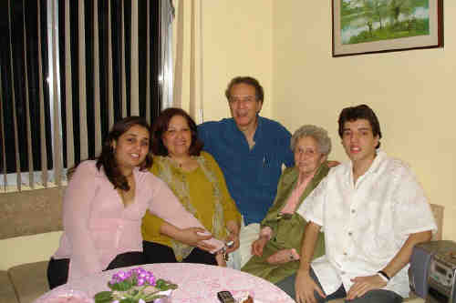
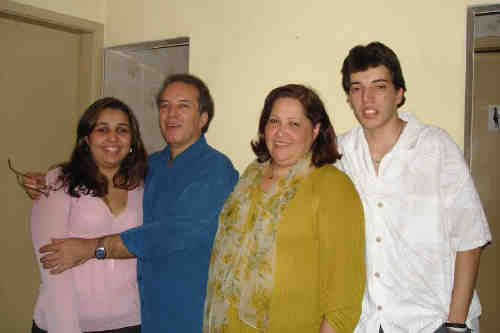

|
|
|
Ailton De Miranda (1953-) |
Ailton De Miranda
 • fotos: Desireé Helena - Eliane Maria - Ailton - Helena - Antônio Augusto.  • fotos: Desireé Helena-Ailton-Eliane-Antônio Augusto. Ailton casad[:o::a] Eliane Maria Colucci Da Silva, filha de Léo Ferreira Da Silva e Maria Helena Colucci, em 23 Set 1983 em Paróquia Sant'ana - Sp. (Eliane Maria Colucci Da Silva nasceu em em 11 Jul 1956.) |
 Eventos notáveis em Sua vida foram:
Eventos notáveis em Sua vida foram: